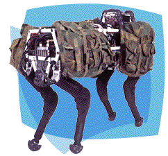
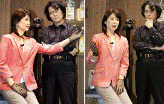
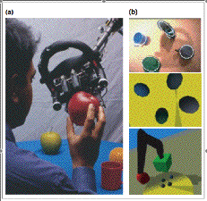
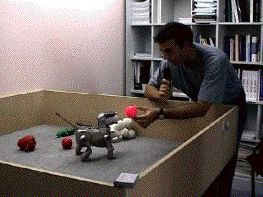

Trying to approach human-like immersion in
the world is the topic of certain recent developments in robotics.
Developments in mechanics and control are
steadily improving these devices. For example much work is being done to make
them move in more biologically natural ways. Honda's first prototype humanoid
robots shuffled forwards in a slow, clumsy way, so pathetic that you felt sorry
for it. But researchers are now mastering ways of implementing more natural
gaits that resemble humans' continually off-balance way of walking. Honda's
ASIMO robot launched in 2006 is able to walk hand in hand with a human, and it
can run at 6 km/hr, even though because of the way it shifts along with its
knees bent, one would still be embarrassed about taking it out for a walk in
public. An example of a robot with a biologically more realistic gait is
"BigDog" built by Boston Dynamics. This was designed as a kind of
mechanical packhorse for military applications. It is really worth seeing the
video on http://www.bdi.com/content/sec.php?section=BigDog showing how BigDog moves like a cross between a goat and a
pantomime horse and recovers its balance when kicked (see also the amusing
story in http://www.sploid.com/news/2006/03/robot_donkey.php).

source:
http://www.bdi.com/content/sec.php?section=BigDog
In addition to improving the way robots
move, researchers and private companies are racing to make humanoid robots that
look like humans, with soft skin and naturally expressive features, eyes and
bodies. Here is inventor Hiroshi Ishiguro from Osaka University, with robot
Repliee Q1 he designed in the image of his own wife.
Other illustrations from the rapidly
advancing domain of autonomous robotics might be Sony's domestic dog robot
AIBO, Massachussetts Institute of Technology's socially expressive emotional
robots Kismet & Leonardo[i];
the host of robotic players in the annual RoboCup[ii]
soccer championships; the Pentagon's Defense Advanced Research Projects Agency
(DARPA) urban challenge for autonomous robotic driving, Ecole Polytechnique
Fédérale de Lausanne's miniature autonomous robotic indoor airplanes modeled
after the way the household fly navigates[iii],
nano-scale robots that travel in the bloodstream and accomplish surgical
operations, etc...[iv]

Repliee Q1 (at left in both pictures) as she
appeared at the 2005 World Expo in Japan, where she gestured, blinked, spoke,
and even appeared to breathe. Shown with co-creator Hiroshi Ishiguro of Osaka
University, the android is partially covered in skinlike silicone. Q1 is
powered by a nearby air compressor, and has 31 points of articulation in its
upper body. Internal sensors allow the android to react "naturally."
It can block an attempted slap, for example. But it's the little,
"unconscious" movements that give the robot its eerie verisimilitude:
the slight flutter of the eyelids, the subtle rising and falling of the chest,
the constant, nearly imperceptible shifting so familiar to humans. source:
http://news.nationalgeographic.com/news/2005/06/0610_050610_robot.html. See
also http://www.ed.ams.eng.osaka-u.ac.jp/research/Android/android_eng.htm for
explanation of how a copy is made of Ìshiguro's young daughter.
Examples such as these are starting to
approach science fiction visions of robotics -- particularly the examples that
actually look and move like humans or animals. But what is more interesting for
us here are recent efforts to investigate how real-world immersion helps in
solving the problems of perception, reasoning and language understanding that
have proved so intractable to Artificial Intelligence. This is the subject of a
new field of robotics called developmental robotics, where researchers are more
directly addressing problems that are clearly relevant to understanding
consciousness.
The idea of developmental robotics (also
called epigenetic robotics) is to build autonomous robots that are initially
provided with only basic capacities. But like the development of a child after
birth, through interaction with their environments they evolve to master more
complex perceptual and cognitive behavior[v].
One example of such a project is BabyBot,
described in the book.
Another effort to study how immersion in
the real world can help solve problems in AI is Ripley, a kind of robot dog
from the MIT Media Lab. Ripley can move its neck and pick things up with its
"mouth". Because Ripley is embedded in the real world, it does not
need to do any very complicated reasoning concerning how it is physically
placed with respect to the objects it is dealing with, and how they are placed
with respect to the person it is talking to: this kind of information is
available at any moment in front of its eyes, so when someone says "pick
up the one on your left", it can just look over on the left and find what
is being referred to. Furthermore, when it learns words like push, pull, move,
shove, light, heavy, red, hard, soft, it can make use of information it obtains
from interacting with objects in order to ground the meaning of the words in
physical reality, imitating what probably happens when real infants interact
with their caretakers[vi].

Ripley,
a conversational robot. (a) Ripley hands its human communication partner an
apple in response to the command, ‘hand me the one on your right’(b) The top
image shows what Ripley sees through its head-mounted video camera when looking
down at the table. Thin white lines indicate image regions that the robot’s
vision system has identified as objects. The second image shows the contents of
Ripley’s mental model, a rigid body simulator that is dynamically kept in
alignment with visual and haptic input. The bottom image shows an alternative
visual perspective within the same mental model that the robot is able to
generate by moving its ‘imagined’ perspective by shifting a synthetic camera
within the physical simulator. A model of the robot’s own body is visible in
this view. The ability to shift visual perspective is used by the robot to
distinguish, for example, ‘my left’ versus ‘your left’. The robot uses a face
detection algorithm to track the human’s physical position and uses this
position to determine the appropriate perspective to simulate to understand ‘my
left’. (Figure and caption from Roy, 2005)

Aibo
and his caretaker playing with various objects. From http://www.csl.sony.fr/Research/Experiments/AIBOFirstWords/Slideshow.html
A similar project was undertaken at the
Sony Computer Science Laboratory (CSL) in Paris, where Sony's robot dog AIBO
learnt the meanings of simple words by interacting with a human[vii].
Other work at Sony CSL in Paris investigated how word meaning and syntax can
emerge when humans or robotic agents play language-oriented games together in
order to achieve common purposes. Of course in these examples the interactions
between robots and humans is much more focused and the number of utterances
involved is much more limited than in normal human interactions. But still,
this kind of work with real, physically embodied agents may be a start to
modeling human language acquisition in a plausible way.
[i] http://www.ai.mit.edu/projects/humanoid-robotics-group/
has information on impressive efforts to make robots that interact with humans
in a socially realistic way. In particular see Cynthia Breazeal's Robotic Life
Group http://web.media.mit.edu/~cynthiab/
[ii] http://www.robocup.org/
[iii] for literature on bio-inspired miniature flying robots see http://lis.epfl.ch/research/projects/microflyers/index.php
[iv] For more examples see Carnegie Mellon's robot hall of
fame: http://www.robothalloffame.org/; also http://www.robotorama.com; Every
day video clips of bizarre new robots are being posted on www.youtube.com.
[v]
See http://www.epigenetic-robotics.org for ongoing activities in this field,
with bibliographic references. For a survey of the related field of
developmental robotics, Lungarella, M., Metta, G., Pfeifer, R., & Sandini,
G. (2003). Developmental robotics: a survey. Connection Science, 15(4),
151-190. doi: 10.1080/09540090310001655110.
[vi] For an overview of this research, with references to
related work in linguistics and robotics, see Roy (2005a,b). The cross channel
early lexical learning model (Roy & Pentland, 2002; Roy, 2003) learns word
meanings from unsegmented audio captured from a caretaker-child interaction,
combined with video corresponding to where the child would be looking.
[vii] see Kaplan & Steels, (2000). Other projects in language and developmental robotics are described on the CSL web site: http://www.csl.sony.fr and http://playground.csl.sony.fr/